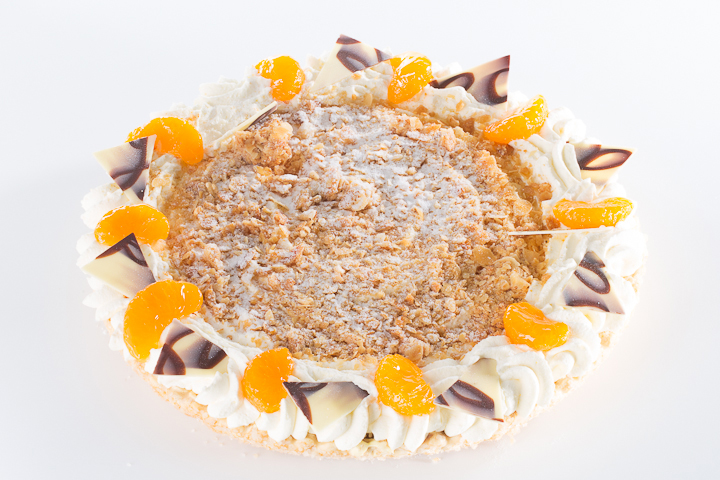

Waarom maken wij de beste luxe vlaaien? Omdat we vastbesloten zijn om de lat hoog te leggen, de beste ingrediënten te gebruiken en mijn passie voor het bakken te delen met iedereen die van onze vlaaien proeft. Het is deze toewijding die onze luxe vlaaien echt de beste maakt.
Bovendien put ik inspiratie uit de rijke tradities van het bakkersambacht en voeg ik er mijn eigen creatieve twist aan toe. Dat betekent dat onze luxe vlaaien zowel klassiek als eigentijds zijn. Elk gebakje heeft een unieke smaak en uitstraling die klanten keer op keer betovert.
